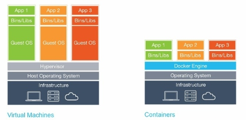
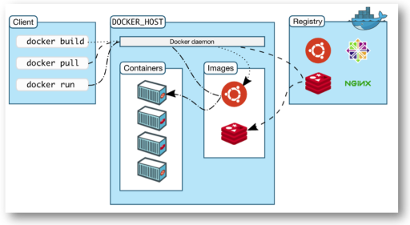
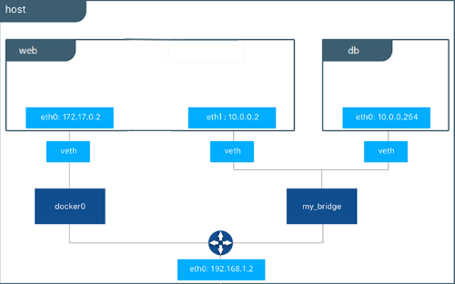
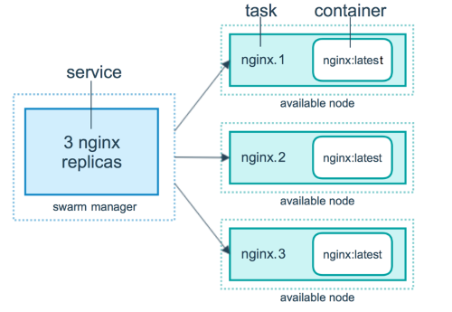

리눅스 운영체제 딴 가상화, 컨테이너 기술
같이보기
- Conda 같은 느낌으로 가상환경을 생성/관리하는 기술
- 개발환경 간 차이를
이미지라는걸 통해 거의 동일하게 하여 개발환경 셋팅이 복잡한 서비스를 한번에 설치 할 수 있다 - 컨테이너 간 격리된 구조로 보안이 좋음
이미지를 통해 가상환경을 만든다 라는걸컨테이너 생성이라고 함
사용하는 이유
-
딥러닝 한번 해보면 안다....- 논문에 재연된 코드들 대부분은 python 버전 부터 시작해서 cuda 버전 부터 다 제각각 이다.
- conda를 통해서 python 까지는 어느정도 분리 시킨다 하더라도 cuda는 드라이버이기 때문
- 그래서 컨테이너 통해서 필요 리눅스 패키지들과 드라이버를 환경을 분리 한채로 이 한계를 극복 가능하다
-
성능하락 없음 & 가벼움- VM 으로 구성한다고 치자. 내 시스템에 있는 모든 자원이 해당 VM에 미리 할당을 해놔야 한다
- 그러니까 할당된 자원 만큼 VM이 쓰지 않는다면 해당 자원 만큼 시스템이 낭비된다
- 하지만 Docker는 하드웨어는 어차피 내꺼를 그대로 쓰니까 그냥 해당 컨테이너가 쓰는 만큼 자원 소모가 된다
- 자원을 풀로 써야 하는 경우에도 VM 은 미리 할당 받은 만큼에 성능까지 이지만 Docker는 그냥 내 시스템 자원 100% 를 쓸 수 있다 (물론 이건 설정 가능하다)
-
커뮤니티 이미지의 사기성- 위 경우에 딥러닝 관련 패키지를 모두 설치하고 cuda 셋팅까지 해놓은 이미지가
Docker Hub에 수도 없이 존재한다 - 난 그냥 이미지만 pull 받아서 조금 셋팅 해주면 금방 서비스가 가능하다
- 또한 mysql, node.js부터 시작해서 이런 패키지 싹다 설치해놓은 이미지도 금방 찾아 볼 수 있으니 배포에 귀찮음을 덜어낼 수 있다
- 위 경우에 딥러닝 관련 패키지를 모두 설치하고 cuda 셋팅까지 해놓은 이미지가
-
시스탬 백업 & 복원:- 내가 컨테이너에서 한 모든 내용을
commit하여 해당 가상환경을 통으로 이미지 를 만드는게 가능하다 - 이걸 응용하여 백업 시스템을 구축하는게 가능하다
- 내가 컨테이너에서 한 모든 내용을
작동 원리
- Docker는 하나의 커널 안에서 여러 OS를 쓰게된다
(리눅스 커널의
Cgroup과 NameSpace 기능을 사용)- 만약 VM이라면 시스템에서 VM이 실행중인 프로그램을 알 방법이 없다
- 허나 Docker는 커널이 같기에 시스템에서 프로그램이 뜨게된다
- 컨테이너 기술은 기본적으로 리눅스에서만 사용가능하다
- Docker에서 macOS/Windows 환경에서는 Hipervisor를 통해 가상화 된다
- 즉 리눅스가 아닌 환경에서는 VM을 사용하여 리눅스를 가상화 하고 Docker Engine을 통해 컨테이너를 생성하게 된다
가상머신 (VM)과 차이점

| 특성 | Docker | 가상 머신 |
|---|---|---|
| 경량화 | 매우 경량화되어 있으며, 커널을 공유하므로 빠르게 시작 가능 | 각 VM은 독립적인 OS 및 커널을 가지고 있어 무겁고 시작 시간이 길다 |
| 보안 | 커널을 공유하므로, 보안 격리가 VM보다 약할 수 있다 | 각 VM은 독립적인 OS와 커널을 사용하여 높은 보안 격리를 제공 |
| 운영체제 지원 | 리눅스만 가능 | 다양한 운영체제를 동시에 실행 가능 (Linux, Windows, macOS 등) |
| 하드웨어 지원 | 특정 하드웨어 가상화 기능 (예: GPU 가상화) 지원이 제한될 수 있음 | 다양한 하드웨어 가상화 기능을 완벽하게 지원 (예: GPU, 네트워크 카드 등) |
| 네트워크 구성 | 네트워크 설정이 복잡할 수 있으며, 대규모 시스템에서는 추가 설정이 필요할 수 있음 | 호스트 PC 와 아예 다른 네트워크 망 취급 |
작동 방식
이미지 & 컨테이너 작동 방식

Dockerfile빌드 하거나, Docker Hub 에서 이미지를 pull 받는다- 실제 저장공간에 실행 이미지를 다운받는다
pull받은 이미지를run하여 컨테이너를 생성한다- 이미지를 메모리에 로드 시킨다
- 만들어진 컨테이너의 접속한다
이미지
Doker의 컨테이너 생성은 무조건 이미지 기반, 따라서 base 이미지 없이는 가상화 하지 못함 즉 내가 ubuntu 사용하고 있는데 내 시스템 기반으로 컨테이너를 생성한다 이딴건 안된다. 그래서 Docker Hub에 있는 ubuntu 기본 이미지를 pull 받아 작업
- Docker Hub 에서 다양한 이미지를 gitHub 처럼 호스팅 하고 있음
- 예를들어 ubutu 환경에서
Arch Linux이미지를pull받아서 컨테이너를 만들면Arch Linux를 가상화 해서 사용 가능한 구조 만드는 방법- Dockerfile 빌드
- 컨테이너 commit
Docker 컨테이너 상의 네트워크
어떤 느낌이냐면 호스트PC 가 공유기 이고 각 컨테이너들이 그 공유기에 물린 컴퓨터들 느낌이다
- Docker의 각 컨테이너들은 각각 독립적이므로 같은 포트를 쓰는게 가능하다
- 내부 컨테이너들은 같은 공유기에 연결된 다른 PC 취급인것이다
- 각각의 컨테이너가
80포트로 서버를 호스팅 하는게 가능하다
- 하지만 Docker는 호스트의 네트워크 망을 똑같이 쓴다
- 그래서 포트포워딩 과정이 필요하게 된다
- 하나는
8080하나는8081에 메핑 하는등
- 하나는
- 그러니까 컨테이너 내부에서는 같은 포트를 써도 무방한데 호스트 PC는 하나니까 다른 포트로 메핑시켜서 실제로 접속되는 포트는 다르게 설계 해야한다는거
실제
- 실제 PC 에서 본 네트워크
- 첫번째로 뜬게 Docker Network 의 게이트웨이
정확히 말하면
docker0라는 Docker의 기본 브릿지 네트워크 - 두번째가 실제 IP 주소
seoksee@ubuntu:~$ ifconfig docker0: flags=4099<UP,BROADCAST,MULTICAST> mtu 1500 inet 172.17.0.1 netmask 255.255.0.0 broadcast 172.17.255.255 ether 02:42:3d:eb:eb:ff txqueuelen 0 (Ethernet) RX packets 0 bytes 0 (0.0 B) RX errors 0 dropped 0 overruns 0 frame 0 TX packets 0 bytes 0 (0.0 B) TX errors 0 dropped 0 overruns 0 carrier 0 collisions 0 eth0: flags=4163<UP,BROADCAST,RUNNING,MULTICAST> mtu 1500 inet 192.168.0.11 netmask 255.255.255.0 broadcast 192.168.0.255 inet6 fe80::2ecf:67ff:fe28:f509 prefixlen 64 scopeid 0x20<link> ether 2c:cf:67:28:f5:09 txqueuelen 1000 (Ethernet) RX packets 72 bytes 11307 (11.3 KB) RX errors 0 dropped 0 overruns 0 frame 0 TX packets 62 bytes 13242 (13.2 KB) TX errors 0 dropped 0 overruns 0 carrier 0 collisions 0 device interrupt 110 - 첫번째로 뜬게 Docker Network 의 게이트웨이
정확히 말하면
- Docker Continer 에서 본 네트워크
root@e684ca6d5112:/workspace/fitpin_ar_backend eth0: flags=4163<UP,BROADCAST,RUNNING,MULTICAST> mtu 1500 inet 172.17.0.2 netmask 255.255.0.0 broadcast 172.17.255.255 ether 02:42:ac:11:00:02 txqueuelen 0 (Ethernet) RX packets 2191 bytes 3228490 (3.2 MB) RX errors 0 dropped 0 overruns 0 frame 0 TX packets 1121 bytes 92127 (92.1 KB) TX errors 0 dropped 0 overruns 0 carrier 0 collisions 0
Docker Network
참고자료
위 컨테이너 상의 네트워크를 Docker Network 구조 라고 부르게 된다
- Docker의 특성상 하나의 PC 네트워크를 서브넷을 통해 컨테이너 끼리 IP주소를 분배하게 되는데
- 이 논리적 Network 기술을 통해 컨테이너 간 통신을 할 수 있개 된다
Veth (Virtual Ethernet Interface)
- 실제 컴퓨터에서 렌카드를 통해 이너넷을 연결하듯이 컨테이너 상에서 docker-engine 과 컨테이너를 연결하는 가상의 네트워크 인터페이스를 뜻함
- 각각의 컨테이너는 다른
Veth를 가진다
구조

- 외부 접속은 실제 호스트 PC 와 포트바인딩(포트포워딩)을 통해 이루어진다
- 예를들어
80포트를 호스트8080포트로 바인딩 시켜 실제 접속은호스트:8080이런식으로
- 예를들어
docker network create명령으로 네트워크를 생성하여 두 컨테이너 간 네트워크를 분리시킨 다면 아예 다른 망이 되어버린다ifconfg로 살펴 보면 아예 다른 네트워크가 생성되는것을 볼 수 있다
종류 (Drivers)
네트워크 드라이버 라고도 함
Bridge 네트워크
Docker 기본 네트워크 드라이버
veth로 컨테이너의 다른 IP 주소를 할당시키고 호스트 PC 와 포트를 연결 하여 에플리케이션 포트를 외부로 노출 시키는 방법
Host 네트워크
veth를 사용하지 않고 호스트PC IP 주소 그대로 사용 하는방법- 당연하지만 컨테이너 생성시 포트포워딩 과정이 필요하지 않다
None 네트워크
- 이름 그대로 네트워크를 사용하지 않는
- 그냥 렌 케이블 뺐다 생각함 됨
Swarm 전용
장점
- 예를들어 API 서버의 포트
8080을 열었다 치자 - API 는 DB와 통신을 하는 구조이다
- 이때 API 서버와 DB서버를 각각의 컨테이너로 구성하고 같은 Docker network 를 쓴다 라고 하면
- DB 컨테이너의 외부 접근은 모두 막아둔채 API 서버의 포트만 노출 시킬 수 있게되는 거다
Dockerfile
docker의 이미지를 만드는 스크립트
규칙
- 파일명은
Dockerfile- 다른파일명을 써도 되지만 웬만해선 바꾸지 않는편
문법
참고
-
RUN:- 명령어 실행
- RUN 꼭 여러개 써야하는 상황이 아니면 웬만해서는 && 로 여러 명령어를 실행하는게 좋다
RUN apt install git -y #Exec 형식으로 사용 RUN ["/bin/bash", "-c", "apt-get install -y git"] -
WORKDIR:- 컨테이너 작업 디렉토리를 변경 (컨테이너 처음 실행시 접속됨)
- 베이스에서
WORKDIR을 지정했을경우 실제 작업경로는 설정된 작업 경로가 맞는데 가끔 프로그램에서 인식 못 할 수 있으므로 다시 정의
WORKDIR "/dir" -
CMD:- 컨테이너가 시작되었을 때 실행할 실행 파일 또는 sh
- Dockerfile 내 1회만 사용가능
- RUN 할때 명령을 따로 준다면 이 설정은 무시됨
CMD ["/bin/bash"] -
ENV: 시스템 환경변수 설정- 컨테이너 OS 내부에서 관리됨
- 다만
.bashrc파일이 수정되는건 아님
ENV LC_ALL=C.utf8 -
ARG: 이미지 빌드시 전달할 환경변수- 유일하게 FROM 이전에 선언이 가능하다
- 따라서 빌드 시 변수로 base 이미지를 바꾸거나 하는게 가능하다
- 주의 해야 할 것이 범위가 바로 아래 구문만 적용되므로 변수를 한번 더 쓰리면
ARG 변수명이렇게 한번 더 선언을 해야한다
# 선언 ARG BASE_VERSION=latest # 사용 FROM ubuntu:${BASE_VERSION} # 다른데서도 사용하려면 이렇게 또 한번 선언을 해줘야함 ARG BASE_VERSION RUN echo "${BASE_VERSION}" ===빌드 시 인자로 이렇게 넘겨주면 됨=== --build-arg "BASE_VERSION=latest"
참고
- https://velog.io/@tjdwns2243/dockerfile-%EB%AC%B8%EB%B2%95-%EC%9E%91%EC%84%B1%EB%B2%95
- https://docs.docker.com/reference/dockerfile/
예제
# ubuntu 베이스 이미지 사용
FROM ubuntu:latest
LABEL maintainer="da864268@naver.com"
LABEL description="my-ubuntu"
# 패키지 업데이트 먼저
RUN apt update
RUN apt upgrade -y
# 패키지 설치
RUN apt install sudo -y
RUN apt install git -y
===참고: 스크립트로 환경변수 추가하는 예===
# ENV 로 해도 상관없지만 조건에 따라서 처리하거나
# TAR 백업시 ENV를 잃는게 싫다면 사용
# 주의: $PATH 이거 그대로 출력하고 싶다면 \ 로 이스케이핑
RUN echo -e "\n\n" >> ~/.bashrc && \
echo -e "PATH=추가경로:\$PATH" >>~/.bashrc \
echo -e "export 키=\"경로\"" >>~/.bashrc
# 프로젝트 폴더 구성
RUN mkdir "/workspace"
WORKDIR "/workspace"컨테이너 root 문제
참고자료
- 대부분에 이미지에서 기본 계정은 root 이다
- 아무리 컨테이너 내부라도 하이재킹 같은 보안 문제를 초례할 수 있게때문에 root 계정을 쓰는건 위험하다
- 따라서 따로 계정 만들어서 사용하자
RUN adduser --disabled-password <유저이름>
USER <유저이름>Dockerfile에서 쉘
-
이게 각 레이어(명령어) 별로 별도에 쉘이 할당되는 구조라
source와 같이 쉘에 의존 하는 명령어가 작동하지 않는다 -
만일 그러고 싶다면
&&연산자를 붙여서 연속적으로 실행하자source ~/.bashrc && conda init
Python docker logs 출력 문제 해결
-
간혹 python 프로그램 실행시 로그가 정상적으로 출력되지 않는 문제가있는데
-
그때는
PYTHONUNBUFFERED환경변수를 설정하면 된다 -
Dockerfile에다 작성해도 되고 추후 컨테이너 생성할때
env인자로 줘도 상관없다===Dockerfile 예=== # python docker logs 출력대응 ENV PYTHONUNBUFFERED 1
Docker-Compose
여러 docker 컨테이너 생성을 별도의
yml로 정의하여 묶어서 관리 하는 도구
사용 이유
- 하나의 서비스를 위해서 컨테이너를 여러개를 생성한다 치자
- 이런식으로 컨테이너 개수가 늘때마다 입력해야 하는 명령어가 너무나 많아짐으로
docker run -d --name wordpress_db \ --network seunghwan_network \ -p 3306:3306 \ -e MYSQL_ROOT_PASSWORD=seosh817 \ -e MYSQL_DATABASE=seosh817 \ -e MYSQL_USER=seosh817 \ -e MYSQL_PASSWORD=seosh817 \ -v mysql:/var/lib/mysql \ --restart unless-stopped \ mysql:8 docker run -d --name seunghwan_wordpress \ --network seunghwan_network \ -p 8080:80 \ --link wordpress_db:mysql \ -e WORDPRESS_DB_HOST=db:3306 \ -e WORDPRESS_DB_USER=seosh817 \ -e WORDPRESS_DB_PASSWORD=seosh817 \ -e WORDPRESS_DB_NAME=seosh817 \ --restart unless-stopped \ wordpress:latest
docker-compose.yml 예제
참고
-
기본예제
services: # 서비스 이름 fitpin: #이미지 명 image: fitpin #이미지를 hub 쪽에서 하는게 아니라 Dockerfile 을 빌드해야 하는 경우 build: context: . dockerfile: ./Dockerfile #생성시 커멘드 (run 할때 뒤쪽에 붙는) command: ["executable", "arg"] ports: - 8080:8080 -
Docker Network 를 구성하는 예제
services: # 서비스 이름 fitpin: #이미지 명 image: fitpin #이미지를 hub 쪽에서 하는게 아니라 Dockerfile 을 빌드해야 하는 경우 build: context: . dockerfile: ./Dockerfile #생성시 커멘드 (run 할때 뒤쪽에 붙는) command: ["executable", "arg"] ports: - 8080:8080 networks: - default - test # driver 지정 안하면 bridge networks: test -
IP 주소 고정 & 폴더를 마운트 하는 예제 (참고로 이렇게 IP 주소를 고정하려면 기본 네트워크 에서는 안된다)
services: server: image: node_test #생성될 컨테이너 이름 container_name: server build: context: . dockerfile: ./Dockerfile volumes: - /home/seoksee/home/docker_Compose:/workspace/docker_Compose networks: # 아래서 생성한 네트워크 이름 my-networks: ipv4_address: 192.168.0.2 networks: # 네트워크 이름 my-networks: ipam: config: - subnet: 192.168.0.0/16
참고
- 최상단에
version을 명시하는 경우도 있는데 이제는 사용안함
swarm 에서 compose.yml 예제
services:
# 서비스 이름
test:
# 이미지 명
image: test
deploy:
replicas: 1
placement:
# placement-pref 옵션
preferences:
- spread: node.hostname
# constraint 옵션
constraints:
- node.hostname == 노드명
# 아래서 생성한 네트워크 이름
networks:
- my-networks
networks:
# 네트워크 이름
my-networks:
# swarm 에서는 무조건 overlay 네트워크 써야함
driver: overlay
attachable: true
ipam:
config:
- subnet: 172.168.0.0/16안되는 구문
container_name | ipv4_address
- swarm 에서는 ip 주소 고정이 안됨
Docker 컨테이너간 IPC 통신
Docker 컨테이너의 커널은 호스트PC 와 동일하기에 커널에서 작동하는 named pipe 는 동일하게 사용가능하다
- 컨테이너 생성시 Pipe 를 마운트 시켜준다
docker run -d -p 8080:8080 -v \\.\pipe\docker_engine:\\.\pipe\docker_engine friism/jenkins
Docker Swarm
참고자료
Docker 에서 만든
컨테이너 오케스트레이션 툴
- 물리적으로 떨어진 여러 PC 의 컨테이너를 하나의 네트워크로 묶거나 배포 관리 해주는
- Load Balancing과 장애대응의 목적을 지니고 있다
- 기존 Docker 의 단점인 하나의 물리적 PC에서 밖에 안되는 문제를 해결한 것
K8S(쿠버네티스)비슷한 것- Docker의 내장된 기능이긴 하지만 내용이 워낙 방대해서 아예 다른 서비스라고 봐도 무방하다
- swarm 에서는
docker service create로 컨테이너를 생성하고, compose file 에서는docker stack deploy로 배포한다
개념
Manager
- swarm의 호스트(서버), 연결된 모든
worker(물리적 서버들)들을 관리하고 제어함 swarm init하면 해당 호스트 pc가manager로 생성이 된다manager는 추가를 할 수 있지만 같은 네트워크 에 있는 호스트만 가능한 듯 하다
개방할 포트
TCP-2377: Manager-Worker 간 통신 포트TCP/UDP-7946: Overlay 네트워크 노드 검색UDP-4789: Overlay 네트워크 트레픽 송/수신
Swarm Lock
manager가 여러개 일 경우 다시manager에 등록한다거나 하면 꼬일 수있어서 Lock 을 걸어 키를 제시하여 재등록 할 수 있도록 한다- 사실상 거의 필수적으로 구성해야 할듯 하다
Worker
manager의 종속되어 있는 호스트pc, manager로 부터 컨테이너를 자동으로 할당받고 시작한다- Worker는 manager가 init으로 발급받은 token 을 통해
docker swarm join으로 해당 manager 의 worker 노드로 등록이 가능하다
구조

Service
Docker-Swarm 의 배포단위
- 일반 도커에서는
docker run을 통해 컨테이너를 배포했다면 Swarm 에서는docker service create를 통해 컨테이너를 배포한다 - 다만 아예 run 명령을 쓸 수 없는 게 아니라 swarm 을 통해 분산 관리를 할 때 사용하는 더 큰 집합의 단위이다 즉 컨테어너(run) 은 service 의 부분 집합 관계가 된다
- 하나의
Service는 여러 컨테이너를 생성할 수 있지만 이미지는 하나 이다- 즉 같은 이미지로 여러개의 컨테이너를 생성한다는 것
Replica
Service 의 컨테이너 생성 수
- Docker Swarm이 에초에 Load Balancing과 장애대응 위해 나온 것이라 서비스 생성 시 하나의 서비스는 하나의 이미지를 가지고 연결된 모든 Node 들에게 같은 컨테이너를 분산 시켜 서비스 할 수가있다
- 기본적으로 각 연결된 node(연결된 pc)들의 시스템 상황(램, 점유율) 등을 고려하여 자동으로 어떤 호스트에 배포 될 것이지를 결정하지만
placement-pref옵션과Constraints옵션을 통해 직접 지정할 수 있다 - 이 기능을 원하지 않는다면 Replica 수를 1로 해야한다 안그러면 중복으로 컨테이너를 생성한다고 오해 할 수있다
Node
swarm의 연결된 모든 호스트를 관리하는 명령어, 단위
- swarm Manager 는 등록된
Worker들을 해당 명령어를 통해 확인 가능하다
Overlay 네트워크
참고자료
- swarm 의 service 에서는 기존에 bridge 네트워크 사용이 불가하다
- 각 service 컨테이너들은 Overlay 네트워크를 거쳐서 통신하게 된다
포트 개방 문제
- bridge 네트워크 에서는 포트 개방 안해도 호스트 pc 와 컨테이너 간 통신에는 문제가 없었다
- 그러나 Overlay 네트워크는 동일 호스트 pc 에서 구동중인 서비스(컨테이너) 라도 포트를 개방 해야만 호스트 pc-컨테이너 간 통신이 가능하다
- 동일 호스트pc 내에 서비스(컨테이너)들 끼리는 자유롭게 통신 가능하지만 외부 서비스(컨테이너) 와의 통신 또한 포트를 개방 해야 한다
Docker Hub
GitHub의 Docker 버전이라고 볼 수 있다
- 이곳에서 이미지를
pull받아 작업하고 - 나만의 이미지를 구축하여
push하여 - Docker Hub 원격 저장소에 저장하는 구조 이다
설치 에디션
Docker Desktop:- GUI 버전.
Docker Engine및Docker Compose가 포함됨 - Windows 의 경우 Docker Desktop으로만 설치 가능
- GUI 버전.
Docker Engine:- CLI 버전. GUI 를 사용하지 않는 OS는 이걸로 밖에 설치 불가
Docker Compose는 따로 설치